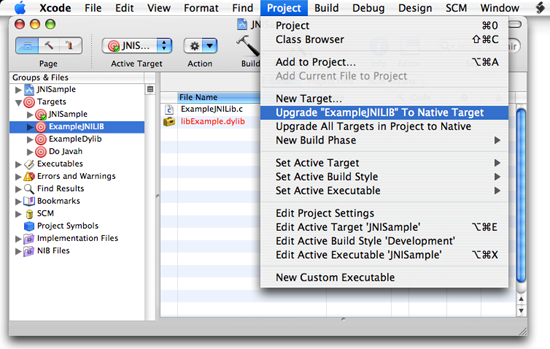

| ADC Home > Reference Library > Technical Q&As > Java > Porting > | |
|
Q: Do I need to change my Java application to run on Intel-based Macs?A: The answer is probably no. Pure Java applications require no code changes to run on Intel-based Macs. This includes the following deployment scenarios:
The story is different for Java applications containing native code. The two cases listed below must be built as universal binaries by following the steps in the Universal Binary Programming Guidelines. These two cases have no exceptions: under no deployment scenarios — not even those listed above — do Java applications that interface with PowerPC-based native code run successfully on Intel-based Macs.
It is important to understand that neither of the above cases run under Rosetta because the Java VM itself does not. JNI libraries or native applications which instantiate a JVM must be built as universal binaries to run on Intel-based Macs. computers. Only Xcode targets that build native (C/C++/Objective-C) code need to be updated to build universal binaries; Java targets require no changes. If your targets were created with an older version of Xcode, they may need to be updated to native targets. To find out if this is necessary:
If the Upgrade to Native Target menu item is enabled, the target must be upgraded before building a universal binary. When the upgrade is complete, a Native Target Upgrade Log appears summarizing any changes. Figure 1 shows an older target that needs to be upgraded. Figure 1: Upgrading to a Native Target in Xcode.  Once the target is upgraded, it is ready to build a universal binary. See the Building a Universal Binary section of the Universal Binary Programming Guidelines and Building a JNI Universal Application With Xcode for more information. Document Revision History
Posted: 2006-10-17 |
|